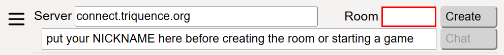
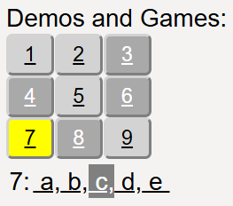
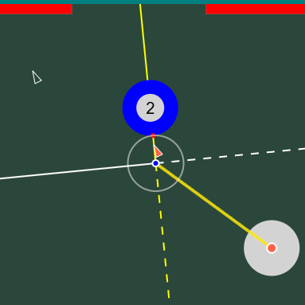
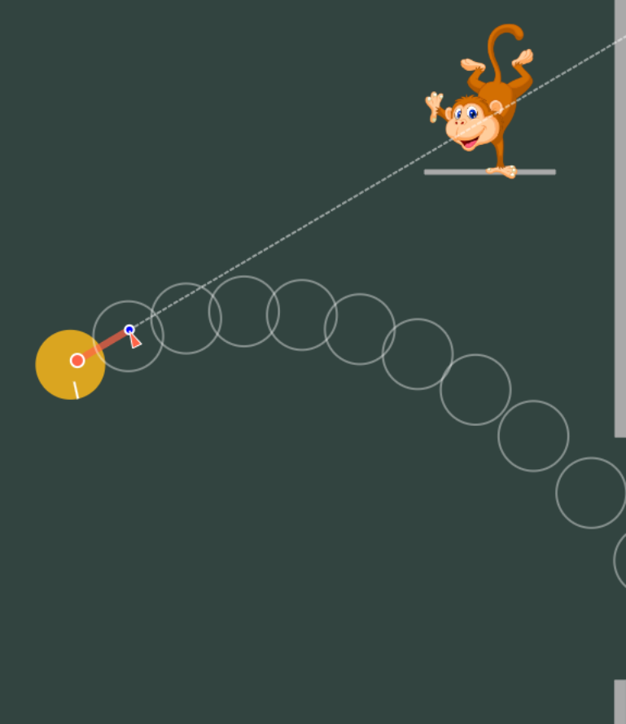
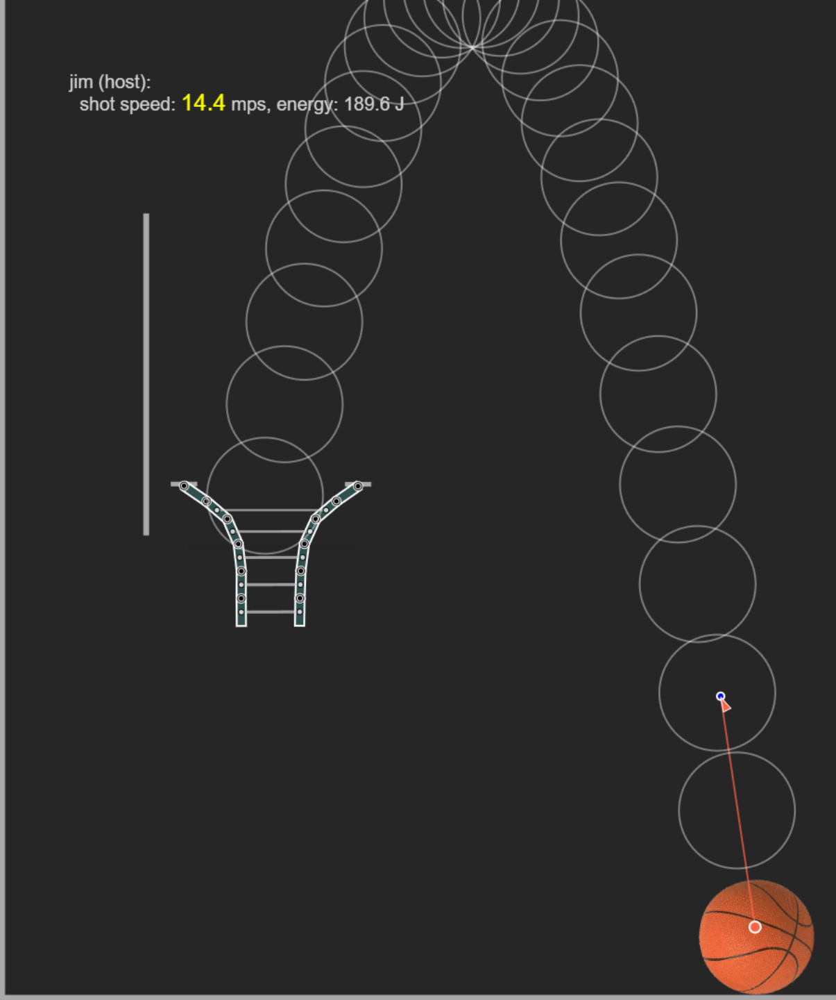
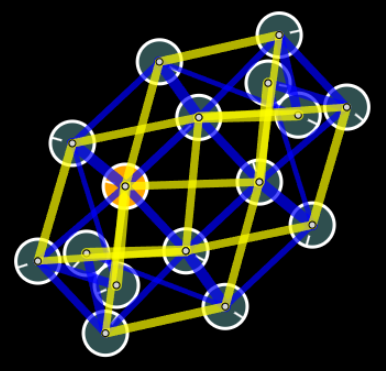
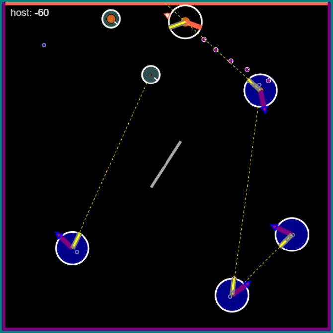
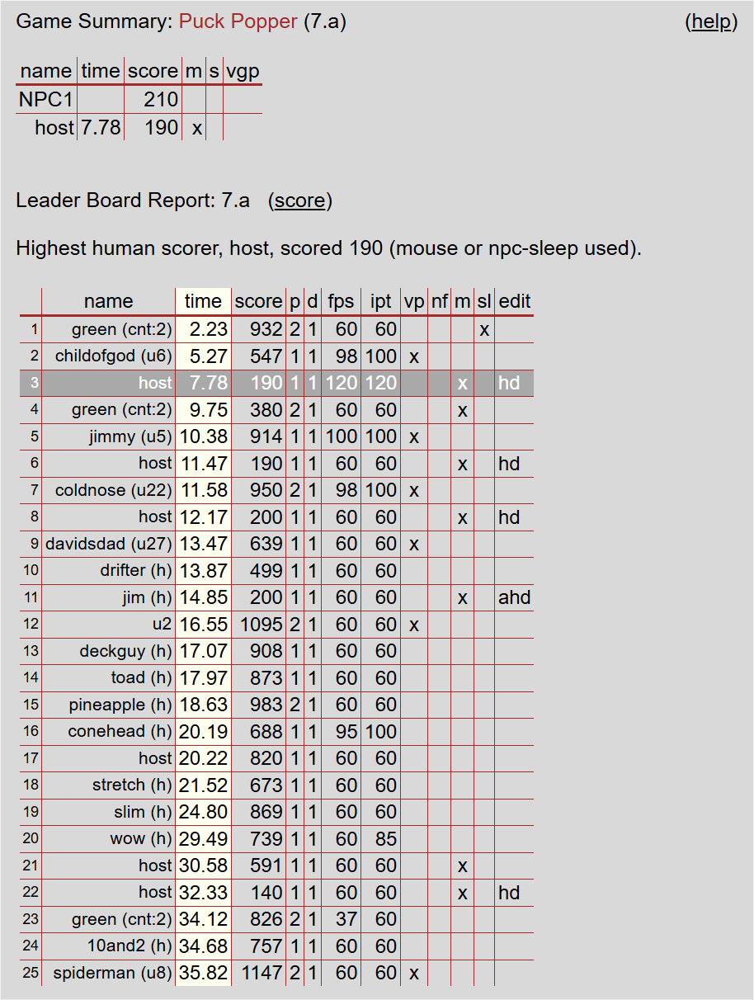
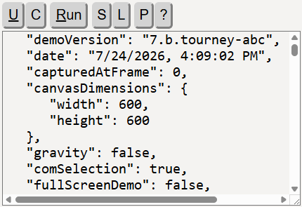

This page collects information players may need for a Springs & Pucks tournament.
It may look like a lot, but running a tournament can be simple — the
easy way is just three steps.
Topics here:
Additional resources:
A tournament is simply an organized session where players compete on the same game course and compare scores on the leaderboard. Competitors can be individual players or teams, and a single tournament can mix both.
The host is the computer that runs the physics engine and displays to the audience. It collects mouse/keyboard input from the host player and connected clients.
The client collects input from an additional player and sends it to the host. It can run in mouse/keyboard mode or gamepad mode. The Two-Thumbs gamepad is only available on a client, which must have a touch screen.
The host has a host-player option under the Multiplayer options (right panel). Uncheck it if the host is not playing — do this when all players are using the gamepad.
Your nickname is the name that appears during games and on the leaderboard.
@ team
separator).@teamname, for example bob@red (see
Team play).noname in the chat field (then Create / Connect / Chat) to go back to being anonymous.

On the main Springs & Pucks page, games are accessed though the numbered buttons and variant links below them (right panel) or corresponding help-text links (left-panel). For example, the Puck Popper game has variants 7a–7e and 8a–8e.
Multiplayer order matters: the host creates the room first, all network clients connect, and then the host starts the game (clicks the demo button). Use the v key for a full-screen view of the canvas (the game window/play area), and esc to return.
| Game | Demo | How to start / play |
|---|---|---|
| Ghost-Ball Pool (9-ball, 8-ball, rotation) |
3d | Select the cue ball and drag the ghost ball to aim; release to shoot (release over the cue ball to
cancel, alt to reverse). Tap z while aiming to set
shot speed. Restart with the 3 key.
Note that the 8-ball and rotation variants are started from links in the help (left) panel. |
| Monkey Hunt | 4e | Click the ball and drag to aim (farther = faster); release to shoot the falling monkey. Use b (or a second finger) for fine aiming. Best in full-screen. |
| Bipartisan Hoops (basketball) |
5e | Drag and release to shoot at the hoop. b toggles high-resolution aiming; ctrl-drag for ball-in-hand positioning; c centers the attachment point for vertical bank shots. |
| Jello Madness | 6a | Untangle the spinning block of jello as fast as possible. The right mouse button, freeze (f), and gravity (g) controls all help. Shortest untangle time wins. |
| Puck Popper (small canvas) |
7 | Be the last puck standing. A group of games (7a–7e), started from the lettered links under the number buttons. Jet: w a s d; gun: i j k l; hold spacebar for a shield. The ? key finds your puck. Cell phones can use the Two-Thumbs virtual gamepad from the client page. |
| Puck Popper (large canvas) |
8 | Same controls as the 7 group of games, on a larger course (8a–8e). |
During play, a live score for each player is shown in the upper-left corner of the canvas, updating in real time as points are earned or lost. This lets everyone track their standing as the game unfolds.
At the end of a game a score summary is shown in the chat panel, followed by the leaderboard report. Toggle between the help panel and the chat/leaderboard panel with the m key.

| Points | Event |
|---|---|
| +50 | win |
| +15 | pocket a ball |
| -5 | take a shot |
| -10 | wrong object ball — not in your group (8-ball), or not the low ball (9-ball / rotation) |
| -20 | scratch the cue ball |

| Points | Event |
|---|---|
| +25 | hit the monkey |
| +100 | push the monkey outside (through the right window) |
A perfect game is 600 points; the b fine-adjust aiming helps you reach it.

| Points | Event |
|---|---|
| +100 | shot rattles in |
| +200 | swish shot |
| +300 | bank shot that rattles in |
| +400 | clean bank shot |
| +500 | trick shot — any shot aiming to the right (v_x > 0), e.g. from behind the backboard. |
| +900 | super tricky shot — a trick shot that also hits the right wall |
| +200 | fling bonus |
Scoring is limited to the first two minutes of play. Any shot stops the on-screen help series.

This game is scored on time only — the seconds needed to untangle the jello (separate the pucks). There is no point score; the shortest time wins.
For solo play, the 6a demo starts with a mildly tangled block of jello, it's spinning, and the tangle-timer is running.
Straighten out the block and the tangle timer stops.
6d is a more challenging tangle.
The right mouse button, the freeze control (f key), and possibly the gravity control are useful in this game.
Hints: one of the interior pucks is colored differently and the diagonal springs are all yellow.
The multiplayer idea here is to create a tangled capture of the block (or an edited version of it) and share
it with another team. The opponent team does the same. Both teams play using the capture provided by their opponent.
Part of the fun/challenge is the editing and tangling process.
Edit the spring lengths/strengths and puck sizes to create an altered version (or you can even add pucks to the grid).
Tangling is generally done best by dragging perimeter pucks into the middle using the right mouse button.
The capture name should reference your team name.
Players load the capture provided by their opponent and then restart the timer by clicking the #6 button (or 6 key).
In addition, there should be one capture, provided by the tournament coordinator, that all teams will play.

Tell the controlled pucks apart by the color of each puck's jet tube: the host's is tomato red (or as specified in the capture), and each client's tube matches the color shown on that client's page. You can also locate your own puck by pressing the ? (question mark) key.
Similar to Jello Madness, Puck Popper lends itself well to producing altered courses that you can post for other teams to try. In addition, there should be one capture that all teams will play. The video page has content on creating custom captures, including the editing, let's build one, and state capture sections. The video on changing the drone path is particularly useful for making a custom course.
| Points | Event |
|---|---|
| +200 | last puck-player standing (win) |
| +100 | popping a client or drone puck |
| +50 | popping a regular puck |
| +10 | hitting a puck with one of your bullets |
| -10 | getting hit by a bullet |
| -1 | a bullet that expires before hitting another puck |
Team play allows you to group multiple players together for scoring purposes in a tournament. Players in a team work together to clear the drones in Puck Popper or take turns in one of the other games.
@teamname to your nickname, e.g. bob@red.red (cnt:3).green (cnt:2) entries in the leaderboard image below.
After completing a game, a leaderboard report of the top 25 results is displayed below the game-score summary in the chat panel.
The leaderboard report can be sorted to show lowest times or highest scores. The default sort is by time. Click the word "score" or "time" in the report to switch between the two sort types. Rows matching your just-finished game are highlighted. Jello Madness reports on a time basis only.
| Column | Meaning |
|---|---|
| name | client name, or nickname (client name) |
| time | seconds to finish/win the game |
| score | point total (see scoring above) |
| p / d | number of human players / drones |
| fps / ipt | monitor frame rate / physics timestep rate |
| vp | virtual gamepad (Two-Thumbs) was used |
| nf | friendly fire was prevented during the game |
| m / sl | mouse usage / drones were sleeping |
| edit | editor usage during the game (wall/pin edits, attribute changes, etc.) |
Hovering over a column header in the leaderboard report shows a tooltip explaining that column. This is especially useful for interpreting the string of letters in the edit column.
The host can query the leaderboard without playing a game. From the multiplayer chat field (after connecting), type
lb to see example queries, then submit one such as:
lb::current — the current gamelb::7.a — a specific gamelb::4.e.monkeyhunt — a specific game
A tournament often runs on a single, agreed-upon course (as defined in a capture). Each capture carries a unique identifier, its
demoVersion name. The leaderboard reports each name separately, so a
uniquely named capture gives your tournament its own dedicated board.
demoVersion name, appending the tournament name.
(e.g. 7.b.tourney-abc).Run the capture.Run the capture — scores automatically land on your group's own leaderboard.
Restart your game with the Run button.
https://triquence.org/?7b&t=tourney-abc
?7b loads the 7.b capture.&t=tourney-abc tournament tag is automatically appended to its demoVersion, producing 7.b.tourney-abc.
Capture controls:
There are five ways to share a capture for a tournament:
7.b), edit its demoVersion name to something unique, such as
7.b.tourney-abc.
Share that name with the other players so they can run that capture using that same name (editing the demoVersion value in the capture)
and automatically report to the same dedicated board.7.a) are scripted and have no capture. See method #3.)
7),demoVersion name.https://triquence.org/?7b&t=tourney-abc loads the 7.b capture
and appends the tag to its demoVersion, producing 7.b.tourney-abc
automatically, so scores go to that dedicated board. The tag may contain letters, numbers,
and hyphens (15 characters max).7.a) run from a
script, so there is no capture to work with yet. First produce one: click Run with the
shift key down to run the scripted start and immediately grab a capture into the
text area. Then edit its demoVersion name and post it as in method #2.A few more notes:
demoVersion name) determines which leaderboard the scores go to, so
a uniquely named capture keeps tournament results apart from the standard demos.lb::<its-version-name> or
lb::current while it is loaded.startingPosAndVels object.
The host's controlled puck (and starting position) can be found in the pucks array by searching for "clientName": "local".
These values are useful for giving all players a fair start.@yourteam if playing in teams), click Connect.For the complete list of mouse, keyboard, and touch commands, see the Mice, Keys, and Touch reference.
.
.
.
.
.
.
.
.
.
.
.
.
.
.
.
.
.
.
.
.
.
.
.
.
.
.
.
.
.
.
.
.
.
.
.
.
.
.
.
.
.
.
.
.
.